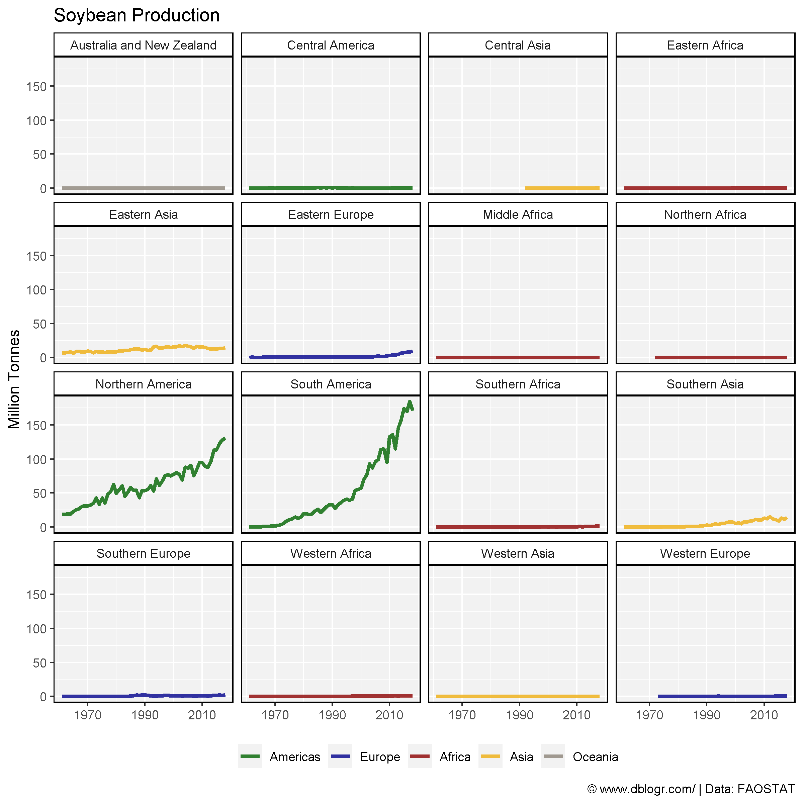
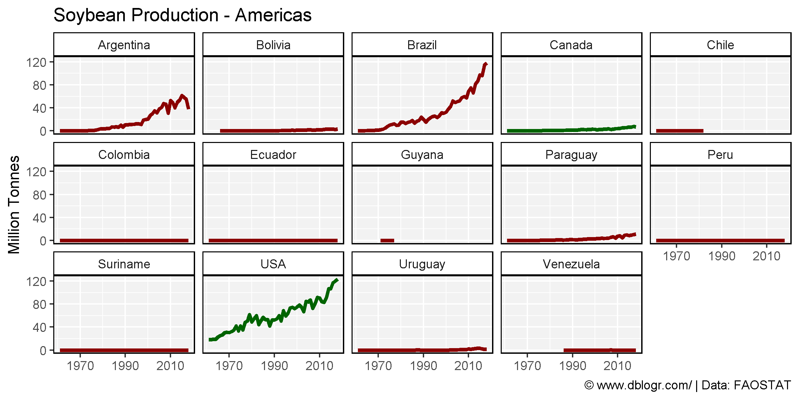
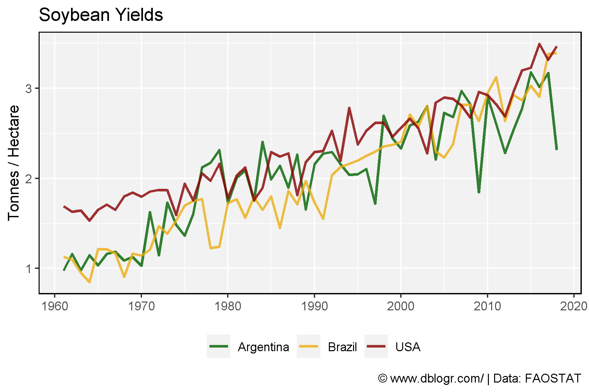
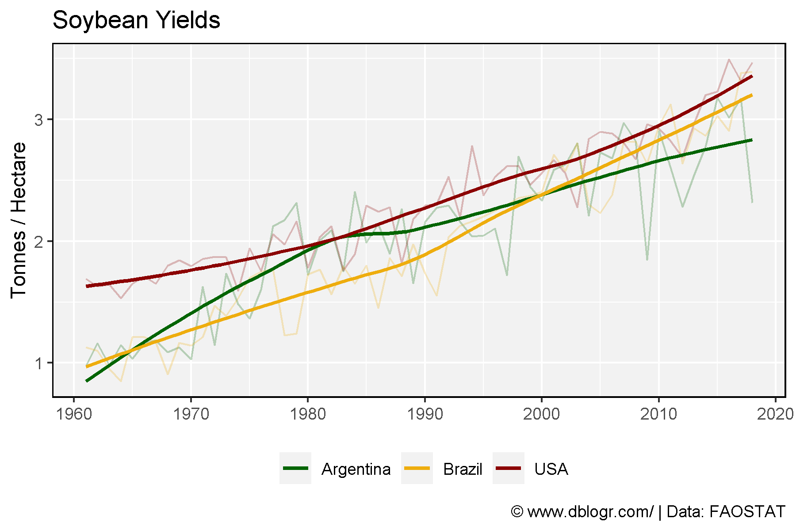
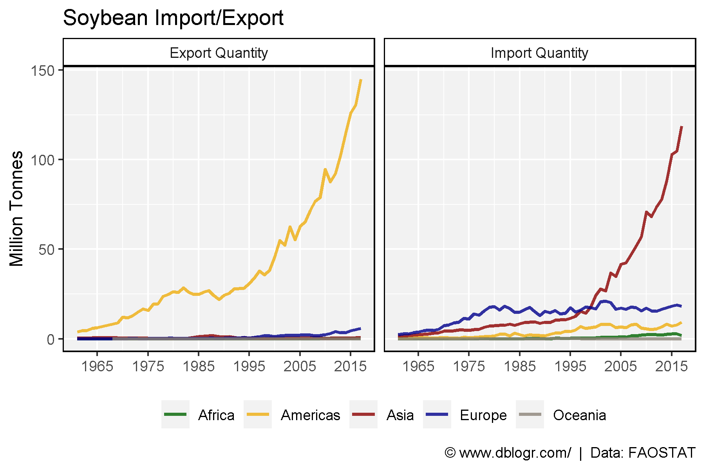
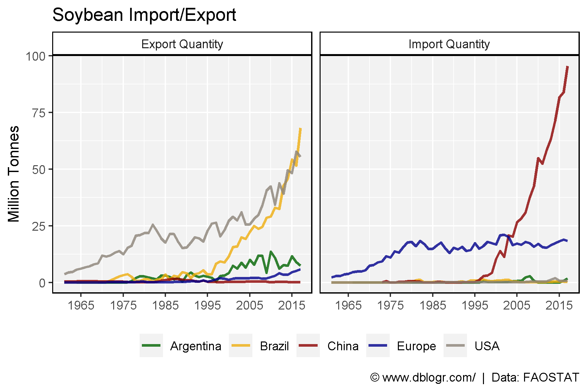

# devtools::install_github("derekmichaelwright/agData")
library(agData) # Loads: tidyverse, ggpubr, ggbeeswarm, ggrepel# Prep data
colors <- c("darkgreen", "darkred", "darkgoldenrod2")
areas <- c("World",
levels(agData_FAO_Country_Table$Region),
levels(agData_FAO_Country_Table$SubRegion),
levels(agData_FAO_Country_Table$Country))
xx <- agData_FAO_Crops %>%
filter(Crop == "Soybeans") %>%
mutate(Value = ifelse(Measurement %in% c("Area harvested","Production"),
Value / 1000000, Value),
Unit = plyr::mapvalues(Unit, c("hectares","tonnes"),
c("Million hectares","Million tonnes")))
areas <- areas[areas %in% xx$Area]
# Plot
pdf("soybean_fao.pdf", width = 12, height = 4)
for(i in areas) {
print(ggplot(xx %>% filter(Area == i)) +
geom_line(aes(x = Year, y = Value, color = Measurement),
size = 1.5, alpha = 0.8) +
facet_wrap(. ~ Measurement + Unit, ncol = 3, scales = "free_y") +
theme_agData(legend.position = "none",
axis.text.x = element_text(angle = 45, hjust = 1)) +
scale_color_manual(values = colors) +
scale_x_continuous(breaks = seq(1960, 2020, by = 5) ) +
labs(title = i, y = NULL, x = NULL,
caption = "\xa9 www.dblogr.com/ | Data: FAOSTAT") )
}
dev.off()## png
## 2# Prep data
colors <- c("darkgreen", "darkblue", "darkred", "darkgoldenrod2", "antiquewhite4")
xx <- agData_FAO_Crops %>%
filter(Crop == "Soybeans", Measurement == "Production",
Area %in% agData_FAO_Region_Table$SubRegion) %>%
left_join(select(agData_FAO_Region_Table, Area=SubRegion, Region), by = "Area")
# Plot
mp <- ggplot(xx, aes(x = Year, y = Value / 1000000, color = Region)) +
geom_line(size = 1.25, alpha = 0.8) +
facet_wrap(Area ~ ., ncol = 4) +
scale_color_manual(name = NULL, values = colors) +
scale_x_continuous(breaks = seq(1970, 2010, 20)) +
theme_agData(legend.position = "bottom") +
labs(title = "Soybean Production", y = "Million Tonnes", x = NULL,
caption = "\xa9 www.dblogr.com/ | Data: FAOSTAT")
ggsave("soybean_01.png", mp, width = 8, height = 8)
# Prep data
xx <- agData_FAO_Crops %>% region_Info() %>%
filter(Crop == "Soybeans", Measurement == "Production",
SubRegion %in% c("South America", "Northern America"))
# Plot
mp <- ggplot(xx, aes(x = Year, y = Value / 1000000, color = SubRegion)) +
geom_line(size = 1.25) +
facet_wrap(Area ~ ., ncol = 5) +
scale_color_manual(values = c("darkred", "darkgreen")) +
scale_x_continuous(breaks = seq(1970, 2010, 20)) +
theme_agData(legend.position = "none") +
labs(title = "Soybean Production - Americas", y = "Million Tonnes", x = NULL,
caption = "\xa9 www.dblogr.com/ | Data: FAOSTAT")
ggsave("soybean_02.png", mp, width = 8, height = 4)
# Prep data
colors <- c("darkgreen", "darkgoldenrod2", "darkred")
xx <- agData_FAO_Crops %>%
filter(Crop == "Soybeans", Measurement == "Yield",
Area %in% c("Argentina", "Brazil", "USA"))
# Plot
mp <- ggplot(xx, aes(x = Year, y = Value, color = Area)) +
geom_line(size = 1, alpha = 0.8) +
theme_agData(legend.position = "bottom") +
scale_color_manual(name = NULL, values = agData_Colors) +
scale_x_continuous(breaks = seq(1960, 2020, 10)) +
labs(title = "Soybean Yields", y = "Tonnes / Hectare", x = NULL,
caption = "\xa9 www.dblogr.com/ | Data: FAOSTAT")
ggsave("soybean_03.png", mp, width = 6, height = 4)
# Plot
mp <- ggplot(xx, aes(x = Year, y = Value, color = Area)) +
geom_line(alpha = 0.25) +
geom_smooth(se = F) +
scale_color_manual(name = NULL, values = colors) +
scale_x_continuous(breaks = seq(1960, 2020, 10)) +
theme_agData(legend.position = "bottom") +
labs(title = "Soybean Yields", y = "Tonnes / Hectare", x = NULL,
caption = "\xa9 www.dblogr.com/ | Data: FAOSTAT")
ggsave("soybean_04.png", mp, width = 6, height = 4)
# Prep data
colors <- c("darkgreen", "darkgoldenrod2", "darkred", "darkblue", "antiquewhite4")
xx <- agData_FAO_Trade %>%
filter(Measurement %in% c("Import Quantity", "Export Quantity"),
Crop == "Soybeans", Area %in% agData_FAO_Region_Table$Region)
# Plot
mp <- ggplot(xx, aes(x = Year, y = Value / 1000000, group = Area, color = Area)) +
geom_line(size = 1, alpha = 0.8) +
facet_grid(. ~ Measurement) +
scale_x_continuous(breaks = seq(1965, 2015, by = 10),
minor_breaks = seq(1965, 2015, by = 5)) +
scale_color_manual(name = NULL, values = colors) +
theme_agData(legend.position = "bottom") +
labs(title = "Soybean Import/Export", y = "Million Tonnes", x = NULL,
caption = "\xa9 www.dblogr.com/ | Data: FAOSTAT")
ggsave("soybean_05.png", mp, width = 6, height = 4)
# Prep data
colors <- c("darkgreen", "darkgoldenrod2", "darkred", "darkblue", "antiquewhite4")
xx <- agData_FAO_Trade %>%
filter(Measurement %in% c("Import Quantity", "Export Quantity"),
Crop == "Soybeans",
Area %in% c("USA", "Brazil", "Argentina", "Europe", "China"))
# Plot
mp <- ggplot(xx, aes(x = Year, y = Value / 1000000, group = Area, color = Area)) +
geom_line(size = 1, alpha = 0.8) +
facet_grid(. ~ Measurement) +
scale_x_continuous(breaks = seq(1965, 2015, by = 10),
minor_breaks = seq(1965, 2015, by = 5)) +
scale_color_manual(name = NULL, values = colors) +
theme_agData(legend.position = "bottom") +
labs(title = "Soybean Import/Export", y = "Million Tonnes", x = NULL,
caption = "\xa9 www.dblogr.com/ | Data: FAOSTAT")
ggsave("soybean_06.png", mp, width = 6, height = 4)
© Derek Michael Wright www.dblogr.com/